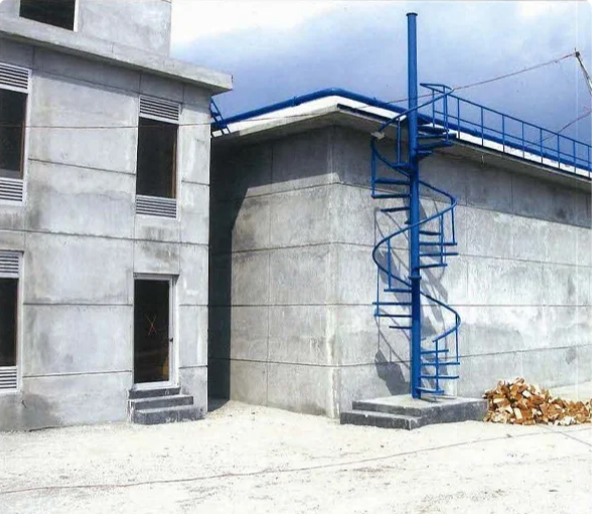

Ikon Smart Solution is the leading sewage treatment plant manufacturer and supplier in India delivering cost effective fully automated sewage treatment plants to various residential, commercial and industrial sectors.

Ikon Smart Solutions have 15+ years of expertise in designing, manufacturing, and supplying smart sewage treatment plants ranging from 1KLD to 10MLD across India. We specialize in executing turnkey wastewater treatment plant projects tailored to industrial and commercial needs across India.
We are ISO certified STP Manufacturing company providing complete end-to-end service from consultation and installation to commissioning and Service for Sewage treatment plant to ensuring treated water meets safe disposal and reuse standards.
We manufacture and supply fully automated, high-efficiency STP systems based on Sequenced Batch Reactor (SBR) technology, suitable for a wide range of industrial applications. We have installed and executed STP systems across diverse industrial sectors, including pharmaceuticals, textiles, food & beverage, hospitality, healthcare, automotive, chemicals and manufacturing sectors.
Call us Get a QuoteAs a leading manufacturer and supplier of Advanced Sewage Treatment plants in India, we deliver SBR-based STP systems built for efficiency, automation, and reliable performance.
| S/no | Features | Description |
|---|---|---|
| 1 | Advanced SBR Technology | Uses Sequenced Batch Reactor (SBR) process combines aeration and clarification in a single tank for efficient treatment |
| 2 | Fully Automated Operation | Centralized smart controller manages the entire treatment cycle, reducing dependency on manual monitoring |
| 3 | Airlift Technology | Replaces mechanical pumps for water transfer, sludge removal, and decantation which helps to minimize equipment failure and maintenance needs. |
| 4 | High Treatment Efficiency | Achieves treated water quality of BOD < 10 mg/l and COD < 50 mg/l |
| 5 | Smart Alarm System | Digital monitoring detects abnormal functions and triggers alerts for proactive maintenance |
| 6 | Scalable Capacity | Modular STP design supports a wide capacity range from 1 KLD to 10 MLD |
| 7 | Energy Efficient | Smart Power Save mode adjusts operation based on tank filling levels, optimizing energy use. |
We manufacture Sewage Treatment Plants (STP) that effectively treat raw sewage water, reducing BOD, COD, TSS and other pollutants to safe discharge levels.
| Parameter | Unit | Influent (Raw Sewage) | Effluent (Treated Water) |
|---|---|---|---|
| pH | - | 6.5 – 8.5 | 6.5 – 8.5 |
| BOD | mg/l | 300 | < 10 |
| COD | mg/l | 600 | < 50 |
| TSS | mg/l | 300 | < 10 |
| Oil & Grease | mg/l | 10 max | - |
| Turbidity | mg/l | - | < 2 |
As a trusted sewage treatment plant supplier, we cater to the growing wastewater treatment needs of residential communities
We customize more than 100+ STP to commercial and institutional application as per their requirement.
Ikon Smart Solution is a leading STP manufacturer for the industrial sector, especially for pharma, textiles, and major factories and processing units.
As an Experienced STP Supply company, we handle end to end service for your STP project from feasibility studies and capacity planning to detailed design, equipment supply, civil work guidance, installation, and commissioning. Ikon smart solution also provides long-term Operation & Maintenance (O&M) support after installation. On top of this, we help with environmental compliance paperwork, including CPCB and SPCB approvals, so you get one single point of contact for the entire project.
We provide tailored STP solutions designed to meet the unique requirements of each wastewater treatment plant project, ensuring optimal performance for every site.
Our space-saving modular STP designs are ideal for urban settings with limited space without compromising on treatment efficiency.
Our STP plants utilize the latest biological treatment techniques, including SBR technology, to deliver reliable and consistent results.
We offer affordable, prefabricated, and factory-assembled STP units that reduce installation time and overall project costs.
With over 15 years of experience, Ikon Smart Solutions is a trusted company in the design, manufacture, and installation of Advanced sewage treatment systems across India. We follow the steps below before starting manufacturing your STP project.
At Ikon Smart Solutions, we understand every project is different according to its own space constraints, wastewater characteristics and regulatory requirements. As a leading customized STP manufacturer in India, we design and build customized sewage treatment plants tailored to residential, commercial and industrial needs.
Our engineering team begins with a detailed assessment of daily sewage generation, influent characteristics, available space for STP plant installation and local compliance norms. Based on this assessment, we configure the STP plant's capacity, layout from compact modular units for space-constrained urban sites to large-scale SBR based systems for high-load industrial applications.
With over 15 years of experience and ISO certification STP Company, we manufacture and supply STP systems ranging from 1 KLD to 10 MLD, ensuring the solution fits your exact requirements. Based in Bangalore, we deliver these tailored, future-ready custom STP solutions to clients across India.
Call us Get A quoteYes. As STP manufacturer and supplier in India, we also provide revamping and upgrading services designed to boost your Sewage treatment plant's capacity, treatment efficiency and overall performance which help you meet current regulatory standards without the cost of a full replacement. With 50+ successful STP revamping projects completed across India, we bring proven expertise to every upgrade.
Our sewage treatment plants use advanced SBR technology, offering high efficiency in a compact, modular design. Fully automated with minimal manual operation, our systems are supported by excellent operation and maintenance service, with strategically located pumps for easy access and servicing.
Our professional design team carefully plans every STP project, ensuring the right capacity, layout, and technology for your specific site and requirements. Our experienced execution team brings this design to life with precise installation and commissioning, minimizing delays and ensuring the Sewage treatment plant performs as intended from day one. And once your STP is up and running, our dedicated troubleshooting and support service team is always ready to resolve issues quickly, keeping your STP plant running efficiently with minimal downtime.
Yes, we manufacture standard and customized STP systems and supply various industrial sectors, including pharmaceuticals, textiles, food & beverage, chemicals, and other factories and processing units. Our systems are designed to handle industrial wastewater loads ranging up to several MLD, while meeting regulatory compliance requirements.
Normally installation timeline for a packaged STP depends on plant capacity, site accessibility and civil work readiness. Since our STP units are prefabricated and factory tested, on-site installation is much faster than conventional STPs. So it is typically completed within a few days to a couple of weeks.
SBR stands for Sequencing Batch Reactor. Unlike most treatment technologies that run as a continuous flow wastewater moving from one tank to the next, SBR runs all treatment stages inside a single tank on a timed cycle.
The STP working cycle has five phases: Fill (wastewater enters the tank), React (aeration begins, bacteria break down organic matter), Settle (aeration stops, sludge settles to the bottom), Decant (clarified treated water is drawn off the top), and Idle (tank waits for the next fill cycle). The entire cycle takes 4–8 hours depending on the design.
Our design, engineering and project management teams are located in the Bangalore head office. STP Manufacturing happens at our Hosur facility in Tamil Nadu and we supply Advance SBR STPs to various location across India from metro cities to Tier-2 towns.